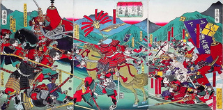
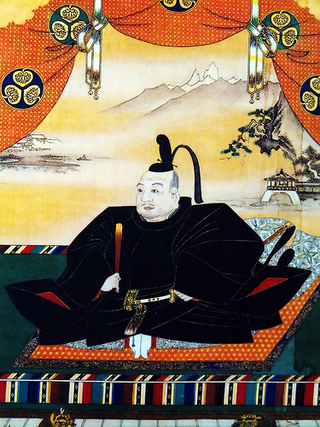
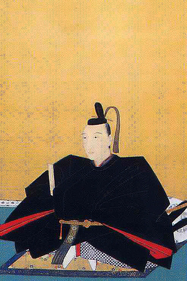
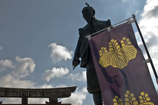

Batalla de Mikatagahara contra las tropas de Takeda Shingen
Hoy vuelvo con mis artículos culturales, esta vez hablaré de Tokugawa Ieyasu (徳川家康), el fundador del shogunato Tokugawa (que gobernaría Japón durante más de 260años, desde el 1603 hasta la restauración Meiji). Es un personaje crucial para entender la historia de Japón pero muy complejo, así que voy a hablar de él en dos post…lo haré lo mejor que pueda. Es uno de los grandes unificadores del país junto con Toyotomi Hideyoshi y fue el que, una vez en el poder, tuvo “la genial idea” de mover la sede de gobierno del Shogunato (y por lo tanto, la capitalidad militar del país) a Edo, la actual Tokyo. 

Hijo de un señor feudal, en el seno del clan Matsudaira, tuvo una infancia bastante movidita en el que su familia le usó como moneda de cambio en alianzas con otros clanes. Durante su adolescencia destacó como estratega, y ganó pequeñas batallas en servicio al Clan Imagawa, del que su familia eran vasallos. Tras la derrota que sufre este clan en la batalla de Okehazama a manos de las tropas de Oda Nobunaga. Ieyasu primero se retira con sus hombres, pero luego decide cambiar de bando. Y, en 1561, con apenas 18 años, toma un castillo del clan Imagawa en nombre de los Oda, mostrando así su fidelidad hacia ellos y renunciando a sus vínculos con los Imagawa.

Representación de Oda Nobunaga
En 1567, adopta el nombre con el que pasaría a la posteridad, Tokugawa Ieyasu, reclamando la descendencia del legendario clan Minamoto (uno de los protagonistas del cantar de los guerreros Heike). La alianza entre los Oda e Ieyasu, vivió momentos tensos en varias ocasiones en las que estuvo a punto de romperse, pero nunca llegá suceder, se necesitaban el uno al otro. Tras la muerte de Oda Nobunaga (obligado a cometer seppuku por Akechi Mitsushide, uno de sus vasallos), Ieyasu continúa apoyando al clan Oda, incluso contra el propio Toyotomi Hideyoshi que en 1583, tras el vacío dejado por la muerte de Oda Nobunaga, y varias luchas contra clanes rivales había tomado el mando del país.

Escultura de Hideyoshi junto al Castillo de Osaka
Ieyasu y el sucesor de Nobunaga, Oda Nobukatsu intentaron enfrentarse al nuevo regente en las batallas de Komaki y Nagakute, para defender los intereses de su clan, pero no pudieron y acabaron firmando un acuerdo de vasallaje con el clan Toyotomi. En esta nueva etapa como vasallo de de Hideyoshi, Ieyasu participa con sus hombres en varias batallas decisivas y va ganando poder dentro del clan, hasta el punto de convertirse en el consejero militar de la corte en Nagoya y posteriormente, ser nombrado por el propio Toyotomi Hideyoshi como uno de sus regentes en el consejo de los Cinco Regentes, que gobernarían el país durante su ausencia hasta que su hijo Toyotomi Hideyori, fuera mayor edad…
Y de momento, lo dejamos aquí y más adelante continuaré la historia de este célebre personaje de la historia japonesa.